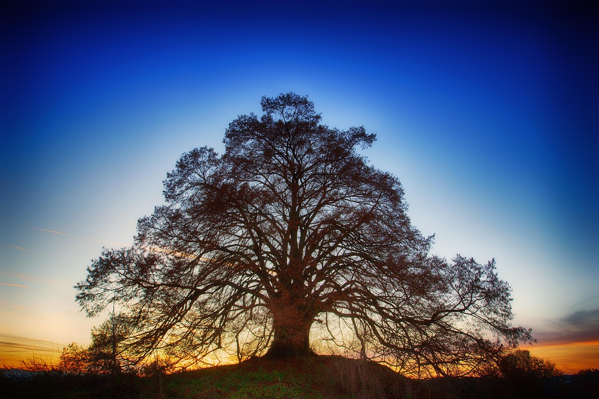

01
Šta je ŠumArt
ŠumArt je naučno-istraživačko udruženje i nezavisna platforma za savremenu umetnost, kulturnu razmenu i interdisciplinarne programe.
Poštovanje prošlosti i stvaralačka snaga sadašnjosti usmereni su ka kvalitetnijoj budućnosti.
